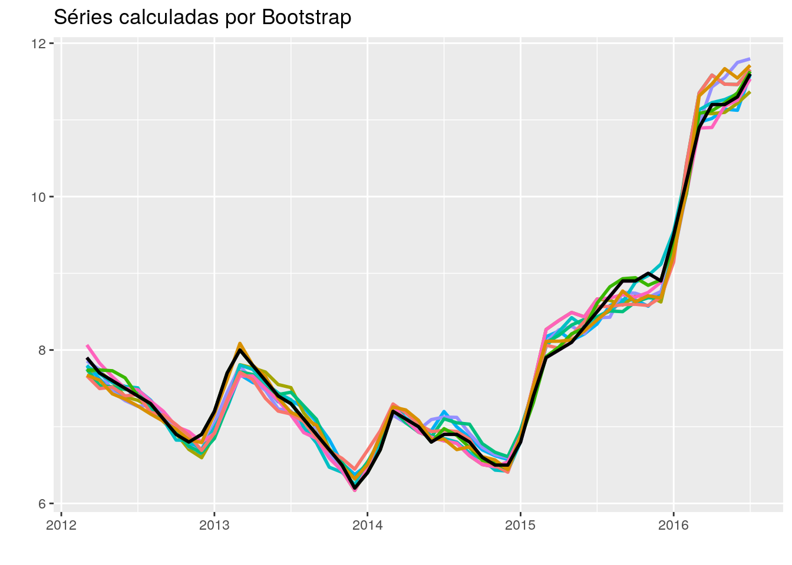

O exercício de hoje tem como objetivo apresentar uma técnica com potencial para aprimorar a previsão pontual de uma série, conhecida como bagging (bootstrap aggregating).
Partindo do pressuposto de que toda série temporal é uma realização específica de um processo estocástico, o que este método faz é gerar outras possíveis realizações (séries) deste mesmo processo gerador. E como isso é feito?
Em primeiro lugar, a série original é decomposta em tendência, sazonalidade e restante (pense neste último termo como a parte aleatória da série). Este termo restante é submetido a um processo de bootstrap, isto é, ele sofre um processo de re-amostragem. Todavia, como o termo aleatório de uma série temporal pode ser correlacionado no tempo, esta re-amostragem não é feita por observações, mas em blocos — blocked bootstrap. Por fim, estes novos componentes aleatórios obtidos via bootstrap são reintroduzidos aos componentes de tendência e sazonalidade da série original formando novas séries que são variantes dela.
Para ficar mais claro, considere o gráfico abaixo. A linha preta é a série original da taxa de desocupação medida pela Pnad Contínua Mensal (IBGE). As linhas coloridas são séries calculadas a partir do processo descrito acima. Do ponto de vista estatístico, qualquer uma daquelas séries poderia ter ocorrido, sendo a série “verdadeira” aquela que efetivamente ocorreu.

Ok, entendido até aqui. E agora? Agora, o método consiste em obter as previsões para cada uma das séries e calcular a média das previsões. Você pode estar se perguntando se, de fato, este método melhora o poder preditivo de um modelo. Existem trabalhos que mostram aumento de performance, na média, para alguns modelos. De todo modo, é aconselhável checar se o mesmo é válido para a série e para o modelo que estamos utilizando. Vamos fazer um exemplo?
Antes de começarmos, uma breve explicação. Utilizaremos a função bld.mbb.bootstrap() do pacote forecast para calcular as séries via bootstrap, conforme o gráfico acima. O resultado será um objeto do tipo lista com as séries geradas. Em seguida, vamos utilizar a função map() do pacote purrr para gerar previsões para cada uma das séries através do auto.arima(), também do pacote forecast. Mas lembre-se que você pode utilizar qualquer modelo que desejar. O pacote forecast tem uma implementação direta através da função baggedModel(), mas eu preferi desagregar o trabalho para deixar mais claro como é feito. Por fim, vamos comparar os erros de previsão (fora da amostra) da série original e da média das séries geradas (bagging).
Passo 1: carregar pacotes necessários
library(sidrar)
library(tidyverse)
library(forecast)
library(timetk)
Passo 2: importar a série temporal da PNAD
pnad <- sidrar::get_sidra(api = "/t/6381/n1/all/v/4099/p/all/d/v4099%201")
pnad_ts <- ts(pnad$Valor, start = c(2012,3), freq = 12)
Passo 3: definir amostras de treino e de teste para medir a acurácia das previsões e também o número de séries geradas por bootstrap
pnad_treino <- window(pnad_ts, end = c(2016,7))
pnad_teste <- window(pnad_ts, start = c(2016,8))
k <- 10
Passo 4: computar as séries via bootstrap
pnad_boot <- forecast::bld.mbb.bootstrap(pnad_treino, k) %>%
purrr::map(.f = ts, start = c(2012,3), freq = 12)
Passo 5: computar previsões por auto.arima, por bagging
aa_fc <- function(x){forecast(auto.arima(x, max.d = 1), n = 24)[["mean"]]}
pnad_boot_fc <- purrr::map(.x = pnad_boot, .f = aa_fc)
## Computar a previsão pelo método bagging
fc_original <- pnad_boot_fc[[1]]
fc_bagged <- pnad_boot_fc %>% purrr::reduce(`+`) %>% `/`(k)
Passo 6: comparar a acurácia dos modelos
accuracy(fc_original, pnad_teste)
## ME RMSE MAE MPE MAPE ACF1 Theil's U
## Test set -2.362092 3.129262 2.363582 -18.89847 18.9103 0.8906952 10.3499
accuracy(fc_bagged, pnad_teste)
## ME RMSE MAE MPE MAPE ACF1
## Test set -1.947639 2.682957 2.013009 -15.56498 16.10364 0.8898631
## Theil's U
## Test set 8.86905
De fato, como é possível observar, as previsões a partir do método bagging apresentaram desempenho superior.
Os códigos dos exercícios encontram-se disponíveis no repositório do blog no github.
Aviso legal: Todo o conteúdo desta página é de responsabilidade pessoal do autor e não expressa a visão da instituição a qual o autor tem vínculo profissional.